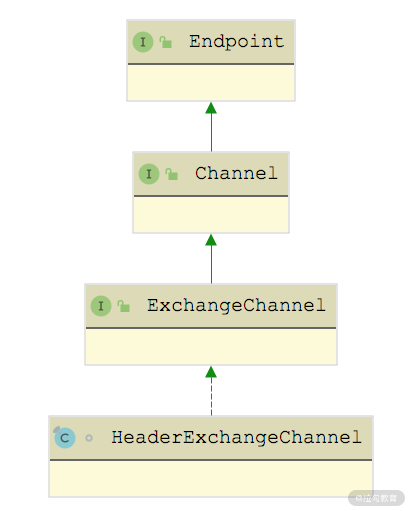

- 00 开篇词 深入掌握 Dubbo 原理与实现，提升你的职场竞争力.md.html
- 01 Dubbo 源码环境搭建：千里之行，始于足下.md.html
- 02 Dubbo 的配置总线：抓住 URL，就理解了半个 Dubbo.md.html
- 03 Dubbo SPI 精析，接口实现两极反转（上）.md.html
- 04 Dubbo SPI 精析，接口实现两极反转（下）.md.html
- 05 海量定时任务，一个时间轮搞定.md.html
- 06 ZooKeeper 与 Curator，求你别用 ZkClient 了（上）.md.html
- 07 ZooKeeper 与 Curator，求你别用 ZkClient 了（下）.md.html
- 08 代理模式与常见实现.md.html
- 09 Netty 入门，用它做网络编程都说好（上）.md.html
- 10 Netty 入门，用它做网络编程都说好（下）.md.html
- 11 简易版 RPC 框架实现（上）.md.html
- 12 简易版 RPC 框架实现（下）.md.html
- 13 本地缓存：降低 ZooKeeper 压力的一个常用手段.md.html
- 14 重试机制是网络操作的基本保证.md.html
- 15 ZooKeeper 注册中心实现，官方推荐注册中心实践.md.html
- 16 Dubbo Serialize 层：多种序列化算法，总有一款适合你.md.html
- 17 Dubbo Remoting 层核心接口分析：这居然是一套兼容所有 NIO 框架的设计？.md.html
- 18 Buffer 缓冲区：我们不生产数据，我们只是数据的搬运工.md.html
- 19 Transporter 层核心实现：编解码与线程模型一文打尽（上）.md.html
- 20 Transporter 层核心实现：编解码与线程模型一文打尽（下）.md.html
- 21 Exchange 层剖析：彻底搞懂 Request-Response 模型（上）.md.html
- 22 Exchange 层剖析：彻底搞懂 Request-Response 模型（下）.md.html
- 23 核心接口介绍，RPC 层骨架梳理.md.html
- 24 从 Protocol 起手，看服务暴露和服务引用的全流程（上）.md.html
- 25 从 Protocol 起手，看服务暴露和服务引用的全流程（下）.md.html
- 26 加餐：直击 Dubbo “心脏”，带你一起探秘 Invoker（上）.md.html
- 27 加餐：直击 Dubbo “心脏”，带你一起探秘 Invoker（下）.md.html
- 28 复杂问题简单化，代理帮你隐藏了多少底层细节？.md.html
- 29 加餐：HTTP 协议 + JSON-RPC，Dubbo 跨语言就是如此简单.md.html
- 30 Filter 接口，扩展 Dubbo 框架的常用手段指北.md.html
- 31 加餐：深潜 Directory 实现，探秘服务目录玄机.md.html
- 32 路由机制：请求到底怎么走，它说了算（上）.md.html
- 33 路由机制：请求到底怎么走，它说了算（下）.md.html
- 34 加餐：初探 Dubbo 动态配置的那些事儿.md.html
- 35 负载均衡：公平公正物尽其用的负载均衡策略，这里都有（上）.md.html
- 36 负载均衡：公平公正物尽其用的负载均衡策略，这里都有（下）.md.html
- 37 集群容错：一个好汉三个帮（上）.md.html
- 38 集群容错：一个好汉三个帮（下）.md.html
- 39 加餐：多个返回值不用怕，Merger 合并器来帮忙.md.html
- 40 加餐：模拟远程调用，Mock 机制帮你搞定.md.html
- 41 加餐：一键通关服务发布全流程.md.html
- 42 加餐：服务引用流程全解析.md.html
- 43 服务自省设计方案：新版本新方案.md.html
- 44 元数据方案深度剖析，如何避免注册中心数据量膨胀？.md.html
- 45 加餐：深入服务自省方案中的服务发布订阅（上）.md.html
- 46 加餐：深入服务自省方案中的服务发布订阅（下）.md.html
- 47 配置中心设计与实现：集中化配置 and 本地化配置，我都要（上）.md.html
- 48 配置中心设计与实现：集中化配置 and 本地化配置，我都要（下）.md.html
- 49 结束语 认真学习，缩小差距.md.html
- 捐赠
21 Exchange 层剖析：彻底搞懂 Request-Response 模型（上）
在前面的课程中，我们深入介绍了 Dubbo Remoting 中的 Transport 层，了解了 Dubbo 抽象出来的端到端的统一传输层接口，并分析了以 Netty 为基础的相关实现。当然，其他 NIO 框架的接入也是类似的，本课程就不再展开赘述了。
在本课时中，我们将介绍 Transport 层的上一层，也是 Dubbo Remoting 层中的最顶层—— Exchange 层。Dubbo 将信息交换行为抽象成 Exchange 层，官方文档对这一层的说明是：封装了请求-响应的语义，即关注一问一答的交互模式，实现了同步转异步。在 Exchange 这一层，以 Request 和 Response 为中心，针对 Channel、ChannelHandler、Client、RemotingServer 等接口进行实现。
下面我们从 Request 和 Response 这一对基础类开始，依次介绍 Exchange 层中 ExchangeChannel、HeaderExchangeHandler 的核心实现。
Request 和 Response
Exchange 层的 Request 和 Response 这两个类是 Exchange 层的核心对象，是对请求和响应的抽象。我们先来看Request 类的核心字段：
public class Request {
// 用于生成请求的自增ID，当递增到Long.MAX_VALUE之后，会溢出到Long.MIN_VALUE，我们可以继续使用该负数作为消息ID
private static final AtomicLong INVOKE_ID = new AtomicLong(0);
private final long mId; // 请求的ID
private String mVersion; // 请求版本号
// 请求的双向标识，如果该字段设置为true，则Server端在收到请求后，
// 需要给Client返回一个响应
private boolean mTwoWay = true;
// 事件标识，例如心跳请求、只读请求等，都会带有这个标识
private boolean mEvent = false;
// 请求发送到Server之后，由Decoder将二进制数据解码成Request对象，
// 如果解码环节遇到异常，则会设置该标识，然后交由其他ChannelHandler根据
// 该标识做进一步处理
private boolean mBroken = false;
// 请求体，可以是任何Java类型的对象,也可以是null
private Object mData;
}
接下来是 Response 的核心字段：
public class Response {
// 响应ID，与相应请求的ID一致
private long mId = 0;
// 当前协议的版本号，与请求消息的版本号一致
private String mVersion;
// 响应状态码，有OK、CLIENT_TIMEOUT、SERVER_TIMEOUT等10多个可选值
private byte mStatus = OK;
private boolean mEvent = false;
private String mErrorMsg; // 可读的错误响应消息
private Object mResult; // 响应体
}
ExchangeChannel & DefaultFuture
在前面的课时中，我们介绍了 Channel 接口的功能以及 Transport 层对 Channel 接口的实现。在 Exchange 层中定义了 ExchangeChannel 接口，它在 Channel 接口之上抽象了 Exchange 层的网络连接。ExchangeChannel 接口的定义如下：

ExchangeChannel 接口
其中，request() 方法负责发送请求，从图中可以看到这里有两个重载，其中一个重载可以指定请求的超时时间，返回值都是 Future 对象。

HeaderExchangeChannel 继承关系图
从上图中可以看出，HeaderExchangeChannel 是 ExchangeChannel 的实现，它本身是 Channel 的装饰器，封装了一个 Channel 对象，其 send() 方法和 request() 方法的实现都是依赖底层修饰的这个 Channel 对象实现的。
public void send(Object message, boolean sent) throws RemotingException {
if (message instanceof Request || message instanceof Response
|| message instanceof String) {
channel.send(message, sent);
} else {
Request request = new Request();
request.setVersion(Version.getProtocolVersion());
request.setTwoWay(false);
request.setData(message);
channel.send(request, sent);
}
}
public CompletableFuture<Object> request(Object request, int timeout, ExecutorService executor) throws RemotingException {
Request req = new Request(); // 创建Request对象
req.setVersion(Version.getProtocolVersion());
req.setTwoWay(true);
req.setData(request);
DefaultFuture future = DefaultFuture.newFuture(channel,
req, timeout, executor); // 创建DefaultFuture
channel.send(req);
return future;
}
注意这里的 request() 方法，它返回的是一个 DefaultFuture 对象。通过前面课时的介绍我们知道，io.netty.channel.Channel 的 send() 方法会返回一个 ChannelFuture 方法，表示此次发送操作是否完成，而这里的DefaultFuture 就表示此次请求-响应是否完成，也就是说，要收到响应为 Future 才算完成。
下面我们就来深入介绍一下请求发送过程中涉及的 DefaultFuture 以及HeaderExchangeChannel的内容。
首先来了解一下 DefaultFuture 的具体实现，它继承了 JDK 中的 CompletableFuture，其中维护了两个 static 集合。
- CHANNELS（Map
- FUTURES（Map
DefaultFuture 中核心的实例字段包括如下几个。
- request（Request 类型）和 id（Long 类型）：对应请求以及请求的 ID。
- channel（Channel 类型）：发送请求的 Channel。
- timeout（int 类型）：整个请求-响应交互完成的超时时间。
- start（long 类型）：该 DefaultFuture 的创建时间。
- sent（volatile long 类型）：请求发送的时间。
- timeoutCheckTask（Timeout 类型）：该定时任务到期时，表示对端响应超时。
- executor（ExecutorService 类型）：请求关联的线程池。
DefaultFuture.newFuture() 方法创建 DefaultFuture 对象时，需要先初始化上述字段，并创建请求相应的超时定时任务：
public static DefaultFuture newFuture(Channel channel, Request request, int timeout, ExecutorService executor) {
// 创建DefaultFuture对象，并初始化其中的核心字段
final DefaultFuture future = new DefaultFuture(channel, request, timeout);
future.setExecutor(executor);
// 对于ThreadlessExecutor的特殊处理，ThreadlessExecutor可以关联一个waitingFuture，就是这里创建DefaultFuture对象
if (executor instanceof ThreadlessExecutor) {
((ThreadlessExecutor) executor).setWaitingFuture(future);
}
// 创建一个定时任务，用处理响应超时的情况
timeoutCheck(future);
return future;
}
在 HeaderExchangeChannel.request() 方法中完成 DefaultFuture 对象的创建之后，会将请求通过底层的 Dubbo Channel 发送出去，发送过程中会触发沿途 ChannelHandler 的 sent() 方法，其中的 HeaderExchangeHandler 会调用 DefaultFuture.sent() 方法更新 sent 字段，记录请求发送的时间戳。后续如果响应超时，则会将该发送时间戳添加到提示信息中。
过一段时间之后，Consumer 会收到对端返回的响应，在读取到完整响应之后，会触发 Dubbo Channel 中各个 ChannelHandler 的 received() 方法，其中就包括上一课时介绍的 WrappedChannelHandler。例如，AllChannelHandler 子类会将后续 ChannelHandler.received() 方法的调用封装成任务提交到线程池中，响应会提交到 DefaultFuture 关联的线程池中，如上一课时介绍的 ThreadlessExecutor，然后由业务线程继续后续的 ChannelHandler 调用。（你也可以回顾一下上一课时对 Transport 层 Dispatcher 以及 ThreadlessExecutor 的介绍。）
当响应传递到 HeaderExchangeHandler 的时候，会通过调用 handleResponse() 方法进行处理，其中调用了 DefaultFuture.received() 方法，该方法会找到响应关联的 DefaultFuture 对象（根据请求 ID 从 FUTURES 集合查找）并调用 doReceived() 方法，将 DefaultFuture 设置为完成状态。
public static void received(Channel channel, Response response, boolean timeout) { // 省略try/finally代码块
// 清理FUTURES中记录的请求ID与DefaultFuture之间的映射关系
DefaultFuture future = FUTURES.remove(response.getId());
if (future != null) {
Timeout t = future.timeoutCheckTask;
if (!timeout) { // 未超时，取消定时任务
t.cancel();
}
future.doReceived(response); // 调用doReceived()方法
}else{ // 查找不到关联的DefaultFuture会打印日志(略)}
// 清理CHANNELS中记录的请求ID与Channel之间的映射关系
CHANNELS.remove(response.getId());
}
// DefaultFuture.doReceived()方法的代码片段
private void doReceived(Response res) {
if (res == null) {
throw new IllegalStateException("response cannot be null");
}
if (res.getStatus() == Response.OK) { // 正常响应
this.complete(res.getResult());
} else if (res.getStatus() == Response.CLIENT_TIMEOUT || res.getStatus() == Response.SERVER_TIMEOUT) { // 超时
this.completeExceptionally(new TimeoutException(res.getStatus() == Response.SERVER_TIMEOUT, channel, res.getErrorMessage()));
} else { // 其他异常
this.completeExceptionally(new RemotingException(channel, res.getErrorMessage()));
}
// 下面是针对ThreadlessExecutor的兜底处理，主要是防止业务线程一直阻塞在ThreadlessExecutor上
if (executor != null && executor instanceof ThreadlessExecutor) {
ThreadlessExecutor threadlessExecutor = (ThreadlessExecutor) executor;
if (threadlessExecutor.isWaiting()) {
// notifyReturn()方法会向ThreadlessExecutor提交一个任务，这样业务线程就不会阻塞了，提交的任务会尝试将DefaultFuture设置为异常结束
threadlessExecutor.notifyReturn(new IllegalStateException("The result has returned..."));
}
}
}
下面我们再来看看响应超时的场景。在创建 DefaultFuture 时调用的 timeoutCheck() 方法中，会创建 TimeoutCheckTask 定时任务，并添加到时间轮中，具体实现如下：
private static void timeoutCheck(DefaultFuture future) {
TimeoutCheckTask task = new TimeoutCheckTask(future.getId());
future.timeoutCheckTask = TIME_OUT_TIMER.newTimeout(task, future.getTimeout(), TimeUnit.MILLISECONDS);
}
TIME_OUT_TIMER 是一个 HashedWheelTimer 对象，即 Dubbo 中对时间轮的实现，这是一个 static 字段，所有 DefaultFuture 对象共用一个。
TimeoutCheckTask 是 DefaultFuture 中的内部类，实现了 TimerTask 接口，可以提交到时间轮中等待执行。当响应超时的时候，TimeoutCheckTask 会创建一个 Response，并调用前面介绍的 DefaultFuture.received() 方法。示例代码如下：
public void run(Timeout timeout) {
// 检查该任务关联的DefaultFuture对象是否已经完成
if (future.getExecutor() != null) { // 提交到线程池执行，注意ThreadlessExecutor的情况
future.getExecutor().execute(() -> notifyTimeout(future));
} else {
notifyTimeout(future);
}
}
private void notifyTimeout(DefaultFuture future) {
// 没有收到对端的响应，这里会创建一个Response，表示超时的响应
Response timeoutResponse = new Response(future.getId());
timeoutResponse.setStatus(future.isSent() ? Response.SERVER_TIMEOUT : Response.CLIENT_TIMEOUT);
timeoutResponse.setErrorMessage(future.getTimeoutMessage(true));
// 将关联的DefaultFuture标记为超时异常完成
DefaultFuture.received(future.getChannel(), timeoutResponse, true);
}
HeaderExchangeHandler
在前面介绍 DefaultFuture 时，我们简单说明了请求-响应的流程，其实无论是发送请求还是处理响应，都会涉及 HeaderExchangeHandler，所以这里我们就来介绍一下 HeaderExchangeHandler 的内容。
HeaderExchangeHandler 是 ExchangeHandler 的装饰器，其中维护了一个 ExchangeHandler 对象，ExchangeHandler 接口是 Exchange 层与上层交互的接口之一，上层调用方可以实现该接口完成自身的功能；然后再由 HeaderExchangeHandler 修饰，具备 Exchange 层处理 Request-Response 的能力；最后再由 Transport ChannelHandler 修饰，具备 Transport 层的能力。如下图所示：

ChannelHandler 继承关系总览图
HeaderExchangeHandler 作为一个装饰器，其 connected()、disconnected()、sent()、received()、caught() 方法最终都会转发给上层提供的 ExchangeHandler 进行处理。这里我们需要聚焦的是 HeaderExchangeHandler 本身对 Request 和 Response 的处理逻辑。

received() 方法处理的消息分类
结合上图，我们可以看到在received() 方法中，对收到的消息进行了分类处理。
- 只读请求会由handlerEvent() 方法进行处理，它会在 Channel 上设置 channel.readonly 标志，后续介绍的上层调用中会读取该值。
void handlerEvent(Channel channel, Request req) throws RemotingException {
if (req.getData() != null && req.getData().equals(READONLY_EVENT)) {
channel.setAttribute(Constants.CHANNEL_ATTRIBUTE_READONLY_KEY, Boolean.TRUE);
}
}
- 双向请求由handleRequest() 方法进行处理，会先对解码失败的请求进行处理，返回异常响应；然后将正常解码的请求交给上层实现的 ExchangeHandler 进行处理，并添加回调。上层 ExchangeHandler 处理完请求后，会触发回调，根据处理结果填充响应结果和响应码，并向对端发送。
void handleRequest(final ExchangeChannel channel, Request req) throws RemotingException {
Response res = new Response(req.getId(), req.getVersion());
if (req.isBroken()) { // 请求解码失败
Object data = req.getData();
// 设置异常信息和响应码
res.setErrorMessage("Fail to decode request due to: " + msg);
res.setStatus(Response.BAD_REQUEST);
channel.send(res); // 将异常响应返回给对端
return;
}
Object msg = req.getData();
// 交给上层实现的ExchangeHandler进行处理
CompletionStage<Object> future = handler.reply(channel, msg);
future.whenComplete((appResult, t) -> { // 处理结束后的回调
if (t == null) { // 返回正常响应
res.setStatus(Response.OK);
res.setResult(appResult);
} else { // 处理过程发生异常，设置异常信息和错误码
res.setStatus(Response.SERVICE_ERROR);
res.setErrorMessage(StringUtils.toString(t));
}
channel.send(res); // 发送响应
});
}
- 单向请求直接委托给上层 ExchangeHandler 实现的 received() 方法进行处理，由于不需要响应，HeaderExchangeHandler 不会关注处理结果。
- 对于 Response 的处理，前文已提到了，HeaderExchangeHandler 会通过handleResponse() 方法将关联的 DefaultFuture 设置为完成状态（或是异常完成状态），具体内容这里不再展开讲述。
- 对于 String 类型的消息，HeaderExchangeHandler 会根据当前服务的角色进行分类，具体与 Dubbo 对 telnet 的支持相关，后面的课时会详细介绍，这里就不展开分析了。
接下来我们再来看sent() 方法，该方法会通知上层 ExchangeHandler 实现的 sent() 方法，同时还会针对 Request 请求调用 DefaultFuture.sent() 方法记录请求的具体发送时间，该逻辑在前文也已经介绍过了，这里不再重复。
在connected() 方法中，会为 Dubbo Channel 创建相应的 HeaderExchangeChannel，并将两者绑定，然后通知上层 ExchangeHandler 处理 connect 事件。
在disconnected() 方法中，首先通知上层 ExchangeHandler 进行处理，之后在 DefaultFuture.closeChannel() 通知 DefaultFuture 连接断开（其实就是创建并传递一个 Response，该 Response 的状态码为 CHANNEL_INACTIVE），这样就不会继续阻塞业务线程了，最后再将 HeaderExchangeChannel 与底层的 Dubbo Channel 解绑。
总结
本课时我们重点介绍了 Dubbo Exchange 层中对 Channel 和 ChannelHandler 接口的实现。
我们首先介绍了 Exchange 层中请求-响应模型的基本抽象，即 Request 类和 Response 类。然后又介绍了 ExchangeChannel 对 Channel 接口的实现，同时还说明了发送请求之后得到的 DefaultFuture 对象，这也是上一课时遗留的小问题。最后，讲解了 HeaderExchangeHandler 是如何将 Transporter 层的 ChannelHandler 对象与上层的 ExchangeHandler 对象相关联的。
© 2019 - 2023 Liangliang Lee. Powered by gin and hexo-theme-book.